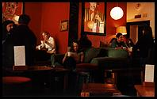
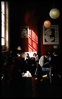
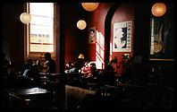
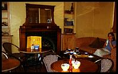
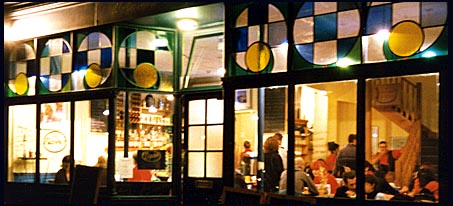

Monday
La Palette, rue de Seine, Paris VI, France
MAP
Traditional but busy
 La Palette, in Paris' posh sixth arrondissement, is a traditional Parisian café, and I guess it's older than any of the people there. The great thing about La Palette is that it is a good all-purpose cafe in that the bar, the tables inside and the terrace outside are all good places to sit.
La Palette, in Paris' posh sixth arrondissement, is a traditional Parisian café, and I guess it's older than any of the people there. The great thing about La Palette is that it is a good all-purpose cafe in that the bar, the tables inside and the terrace outside are all good places to sit.
At the bar you get to sit and read the paper and watch the continuous
bustle behind the bar. Even when the place is half-empty the staff rush around in what appears to be a state of total chaos, but where all the right drinks, sandwiches, meals and bills appear at the just the right time. There's something very reassuring about this as you sip your grand (café) crème and eat a pain au fromage for breakfast on a Sunday morning.
Pavement terrace
Meanwhile, you could be outside on the pavement terrace. The terrace is
on the corner of a wide side street and the narrow rue de Seine, which has the ideal combination of lots of pedestrians and very few cars. Rue de Seine is typical of the Saint-Germain area: expensive but arty, busy and cosmopolitan, which generates a colourful crowd of passers-by and customers at La Palette.
If you sit at a table inside, not only do you get the option of a meal,
but you get to look at the paintings. I would like to think that the slightly faded pictures of the inside of the cafe were painted in the twenties by impoverished young artists who didn't have enough sous to buy breakfast. French cafes are like leather briefcases and a good pair of jeans - they wear well with age. Unfortunately, perhaps, the the tiny unisex toilet, which is also the, er... traditional kind.
Tuesday
 Péché Mignon, rue du St. Esprit, Luxembourg
Péché Mignon, rue du St. Esprit, Luxembourg
Péché Mignon typifies Luxembourg itself -
smart and stylish, and not many people. It's not just this cafe - none of the cafes are always busy. Péché Mignon is only packed out when they have live jazz.
Smart decor
The decor is the most distinctive thing about Péché Mignon:
numerous paintings on deep red walls, with designer lighting and a great selection of furniture. There are leopard skin and wood armchairs, wood and leather chairs, and upstairs there are even a couple of sofas. This is somewhere where a chaise longue wouldn't be out of place. This makes it one of the better places to relax.
Smart crowd
 Unsurprisingly, Péché Mignon is popular with the
ambassadorial crowd, but this doesn't seem to stop the cafe welcoming such scruffy people as myself. Drinks prices are okay too - fairly average for Luxembourg. The snacks are good, if not particularly cheap; the posh croque monsieur with salad for about 300 LUF is fairly typical.
Unsurprisingly, Péché Mignon is popular with the
ambassadorial crowd, but this doesn't seem to stop the cafe welcoming such scruffy people as myself. Drinks prices are okay too - fairly average for Luxembourg. The snacks are good, if not particularly cheap; the posh croque monsieur with salad for about 300 LUF is fairly typical.
The swanky style doesn't stop at the decor and the people: coffee comes
on a little tray with its own glass of water and not one but two chocolates. Needless to say, there are art magazines 'arranged' on bookcases and window sills. I even found Asterix in Luxembourgish.
Wednesday
CB1, Mill Road, Cambridge, England
MAP
 CB1 is, naturally enough, in Cambridge's CB1 post code area, which puts it on the dividing line between Town and Gown. Mill Road is the closest that Cambridge gets to being hip or bohemian
CB1 is, naturally enough, in Cambridge's CB1 post code area, which puts it on the dividing line between Town and Gown. Mill Road is the closest that Cambridge gets to being hip or bohemian
Intellectual games
CB1 has an intellectual feel, with its second-hand books and people
playing chess and other deeply thoughtful games. It isn't all intellectual though - CB1 is really a place to just hang around and drink coffee.
Books
The books come in handy if no-one you know is there, or you don't feel
like chatting to the people who are. Actually buying the books seems to be strictly optional, but they're very cheap and unless you lead a completely idle life you tend to have to be somewhere else after a couple of chapters and several coffees.
Computers
Another side to CB1 emerges if you go downstairs to find the toilet; as
you enter the basement room, CB1 seamlessly becomes a cybercafe. This is unexpected in a cafe where people sipping coffee are actually having face-to-face conversations. Anyway, the cybercafe goes back a long way - it was Britain's first outside London.
Thursday

The Boston Tea Party, Park Street, Bristol, England MAP
I first went to the Boston Tea Party in the spring of 1996; I think it was a Thursday. We'd only popped in for afternoon tea (revision avoidance) at about four o'clock, but it was so relaxing that we were still there, lounging on a sofa drinking coffee, when they closed at 9.30 p.m.
Sofas and other furniture

It was the sofa, of course, that kept us there so long. Most places don't have the kind of furniture that you want to sit on for hours. In its big upstairs room, the Boston Tea Party has a motley collection of old furniture, including a couple of sofas. I like that: it's good to be able to choose between sofas, armchairs, a big kitchen-style table, or a little table by the window. Variety like this makes the place all things to all people.
In contrast to the well-worn furniture, there is usually some aspiring artist's collection adorning the smartly-decorated walls. You wouldn't know about any of this when you walk through the door downstairs, though, where the counter and open kitchen are always busy. The rushed office-types who dash in for a sandwich and a take-away latte at lunchtime are many metaphors away from the mixed crowd who are chilling out upstairs.
Excellent coffee

The coffee, of course, is excellent; as is the large selection of teas. It's only a shame that the coffee mugs aren't as huge now as they originally were.
Rachel and I had actually gone looking for the sofa that first time, having seen a public sofa on the telly in the first series of Friends. Fortunately, the Boston Tea Party doesn't have a bimbo-with-hair-on-backwards waitress hanging around, so it's actually better than Central Perk. There is also a wall opposite the sofa, which you don't get in a television studio.
So this is where it all started for me - hanging around in cafes, only leaving to look for another one to add to European Cafe Watch.
Did you miss CB1, the previous Cafe Of The Day?
Friday
Disco Biscuit, Queens Road, Brighton, England
MAP
 SHOCK NEWS! As of November 1999 Disco Buscuit is no more - it's all boarded up. Anyway, before that happened I wrote...
SHOCK NEWS! As of November 1999 Disco Buscuit is no more - it's all boarded up. Anyway, before that happened I wrote...
Disco Biscuit tipifies Brighton itself; it looks relatively normal from
the outside, but when you get inside you see that it's a bit different, and when you venture further in you find that it's downright weird. In Disco Biscuit the furniture is kitsch, except for the no-messing comfy sofas, the milkshakes are imaginative and the upstairs has a, um... big rocket. You've got to see it really.
Disco Biscuit used to be a post club cafe, but it changed hands and is
now open during the day; this might explain the chill-out atmosphere. It's even sufficiently relaxed not to be at all intimidating if you're not sufficiently alternative yourself to blend into the surroundings.
As well as tea, coffee and the excellent milkshakes there is the
predictable assortment of rustic cakes and biscuits. I seem to remember that they do more substantial food, but if they do I've never tried it.
One of the more incongruous things about Disco Biscuit is its mainstream
location on the busy road between the station and Churchill Square - this is the sort of cafe that you expect to find in North Laine. Still, this is good as it makes it a more handy place to collapse if you've been trekking around the shops.
Saturday

Puccinos: several branches around the South-East of England, including
Fife Street, Kingston
MAP
1 Bartholemews, Brighton
High Street, Guildford
180 High Street, Beckenham
196 Above Bar, Southampton
22 Monsoon Road, Tunbridge Wells
35 George Street, Hove
 The first Puccinos I went to was the one in Kingston. I'd been dragged
around the shops and definitely needed a break, so I was really glad to wander into a proper-looking cafe that exuded good coffee vibes. Whilst we were waiting for our coffees I started idly looking around. Above our table, opposite the counter, I saw a floor plan showing the table numbers for the staff. It didn't really catch my eye until I noticed that not only was there an upstairs, but that it had a diagram of a big sofa on it! Needless to say, we had our coffees upstairs on the big sofa.
The first Puccinos I went to was the one in Kingston. I'd been dragged
around the shops and definitely needed a break, so I was really glad to wander into a proper-looking cafe that exuded good coffee vibes. Whilst we were waiting for our coffees I started idly looking around. Above our table, opposite the counter, I saw a floor plan showing the table numbers for the staff. It didn't really catch my eye until I noticed that not only was there an upstairs, but that it had a diagram of a big sofa on it! Needless to say, we had our coffees upstairs on the big sofa.
Puccinos is quite a fun Italian-style cafe, with cool decor and a cool
menu, with food and stuff as well as the normal coffees. You can even opt for something a little stronger than normal in your espresso, such as stiff Vodka. The food isn't bad and the chocolate cake portions are huge.

The Puccinos in Brighton is just as good as the one in Kingston and has
a better location. The Puccinos in Guildford, however, is terrible; it lacks the same atmosphere and the service is appalling. I haven't tried any of the others yet.

{kind=link}
{kind=link}
{kind=link}
{kind=link}
Comments
Contributed by Nicky Saunter, Co-owner Boston Tea Party Bristol and Exeter on 8 February 2001.